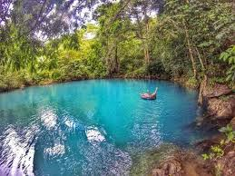
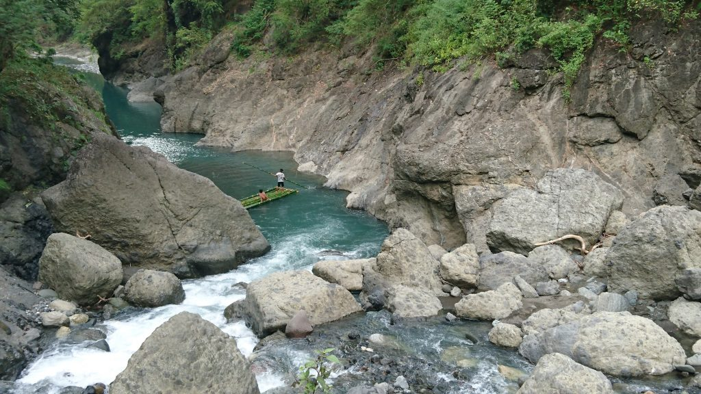
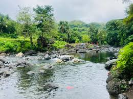
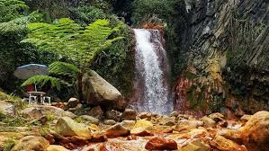

Rivers and Waterfalls
📍 Must Visit Rivers and Waterfalls in Antique
Antique Province is blessed with numerous rivers and waterfalls that are both refreshing and scenic, making them some of the most popular natural attractions in the area. Surrounded by lush forests, rolling hills, and pristine landscapes, these spots are ideal for relaxation, adventure, and nature appreciation. Unlike crowded tourist sites, Antique’s rivers and waterfalls offer a peaceful escape where visitors can connect with nature in a more authentic setting.
The province is also gaining recognition for adventure tourism, with activities like river tubing, kayaking, and waterfall trekking becoming increasingly popular. Many rivers and falls are located near eco-tourism areas, making them accessible yet still preserved in their natural beauty.

Bugang River (Pandan)
Voted one of the cleanest rivers in the Philippines. Perfect for swimming, bamboo rafting, and river tubing. Surrounded by lush tropical vegetation and coconut groves.

Tibiao River (Tibiao)
Famous for river tubing adventures, offering calm currents and scenic forest surroundings. Provides a unique way to explore the natural beauty of Antique.

Sibalom River (Sibalom / San Remigio)
Flows through the protected Sibalom Natural Park. Ideal for eco-tourism, nature walks, and wildlife spotting.

Culasi River (Culasi)
A key river in northern Antique. Surrounded by scenic landscapes and local farms.

Bugtong Bato Falls (Tibiao)
Multi-tiered waterfall surrounded by lush greenery. Visitors can hike along the trails and swim in cool natural pools. A serene spot for relaxation and photography.

Pulangbato Falls (Barbaza)
Known for its reddish stones and clear cascading waters. Accessible via short hiking trails and surrounded by tropical forest.

Malumpati Cold Spring / Falls (Barbaza / Culasi)
Combines a river and small waterfall system with crystal-clear cold waters. Perfect for swimming, wading, and relaxing in nature.

Tigbawan Falls (Anini-y)
A secluded waterfall surrounded by forested hills. Ideal for trekking and eco-adventure.